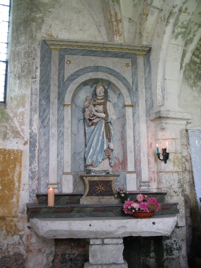

Accueil
Les amis de Vitotel
Photos
Saint Michel de Vitotel
Saint Clair
Agenda
Expositions
Contact

Amis de Vitotel
Amis de Vitotel
Les statues de l'église Saint Michel
 |
 |
 |
| Saint Sébastien
XVéme siécle |
Saint Clair |
La Vierge Marie |
| Le plus populaire des saints anti-pesteux.
Son image est très répandue dans nos églises ainsi que dans les confréries de charité. Depuis la fin des épidémies de peste, Saint Sébastien protège contre les maladies infectieuses, les "mauvaises fièvres" |
Saint Clair est uniformément un saint céphalophore,
soit qu'il tienne sa tête toute entière, soit qu'il présente seulement sa calotte crânienne.
|